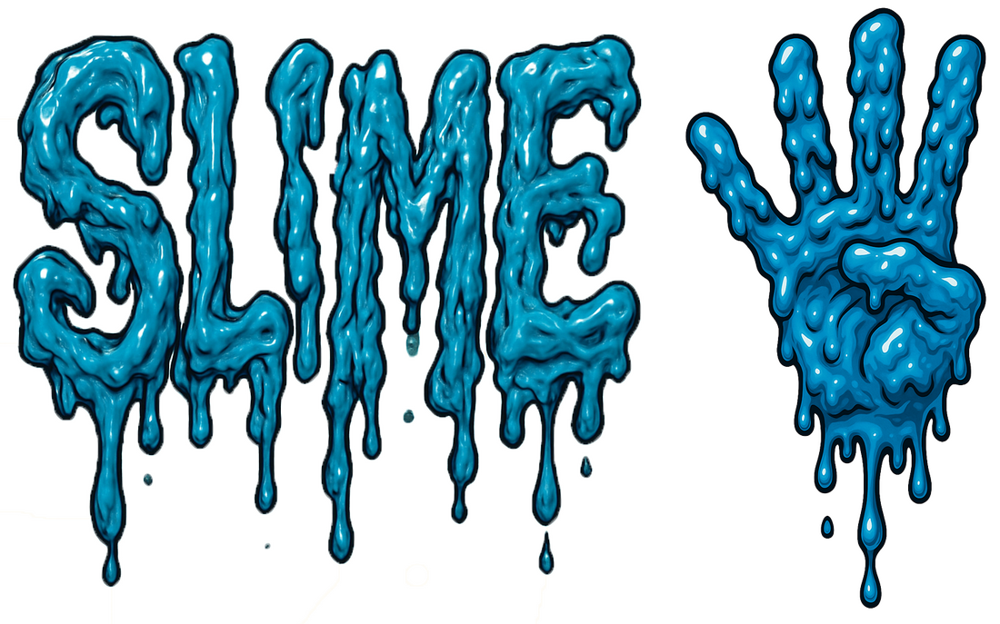

Studies in Language, Information, Meaning and Expression
September 19–20, 2025 • UCLA
Time: Sept. 19–20, 2025
Location: Royce Hall 314
Faculty organizers: Joshua Armstrong, Sam Cumming, and Gabriel Greenberg
Events coordinator: Ashna Madni
All are welcome, but please RSVP if possible! [RSVP form]
Format: The conference is “pre-view”: recorded talks will be available ahead of time. Discussion is led by a commentator (20 min), followed by replies from the speaker (20 min) and Q+A (60 min).
Pre-view expectation: We ask that all attendees view or read the talks prior to the day when they are being discussed. Thank you!
Friday, Sept. 19
9:30 AM – 10:00 AM
Coffee & Continental Breakfast
10:00 AM – 11:40 AM
Matthew Stone & Una Stojnić, “Meaning in Chatbots: A Critical Approach” [video]
Commentator: Rosa Cao
11:40 AM – 1:00 PM
Lunch
1:00 PM – 2:40 PM
Alan Fiske, “Representations of Social Relationships: Modes of Thought, Means of Coordination” [video]
Commentator: Evan Westra
3:00 PM – 4:40 PM
Karen Lewis, “Gamified Language Games” [video] [slides]
Commentator: Dan Harris
Saturday, Sept. 20
*PLEASE NOTE SCHEDULE CHANGE
9:30 AM – 10:00 AM
Coffee & Continental Breakfast
10:00 AM – 11:40 AM
Ellen Lau, “New directions for neurobiology of semantics: mental particulars and long-term knowledge” [video]
Commentator: Idan Asher Blank
11:40 AM – 1:00 PM
Lunch
*1:00 PM – 2:40 PM
Thi Nguyen & Ethan Nowak, “Slang is better” [video part 1, part 2]
Commentator: Eric Acton
*3:00 PM – 4:40 PM
Speakers
Alan Fiske [website]
Professor of Anthropology, University of California, Los Angeles
Allison (Ari) Koslow [website]
Assistant Professor of Philosophy, University of California, Irvine
Ellen Lau [website]
Associate Professor of Linguistics and Neuroscience & Cognitive Science, University of Maryland, College Park
Karen Lewis [website]
Associate Professor of Philosophy and Department Chair, Barnard College – Columbia University
Thi Nguyen [website]
Associate Professor of Philosophy, University of Utah
Ethan Nowak [website]
Assistant Professor of Philosophy, Stanford University
Matthew Stone [website]
Professor of Computer Science, Rutgers University–New Brunswick
Una Stojnić [website]
Professor of Philosophy, Princeton University
Commentators
Evan Westra [website]
Associate Professor of Philosophy, Purdue University
Rachel Rudolph [website]
Assistant Professor of Philosophy, University of California, San Diego
Idan Asher Blank [website]
Assistant Professor of Psychology, University of California, Los Angeles
Daniel Harris [website]
Associate Professor of Philosophy, Hunter College and CUNY Graduate Center
Eric Acton [website]
Associate Professor of English Language and Literature, Eastern Michigan University
Rosa Cao [website]
Assistant Professor of Philosophy, Stanford University
SLIME is made possible through the generosity of the Kaplan-Panzer fund.
In case of technical issues, please email Ashna Madni at ashnamadni@humnet.ucla.edu.